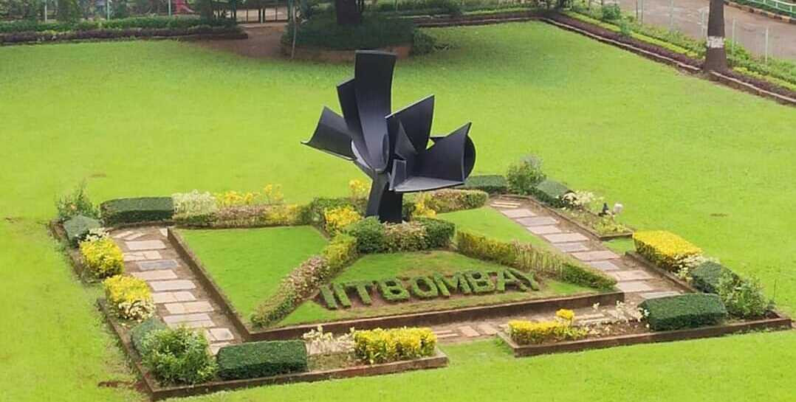
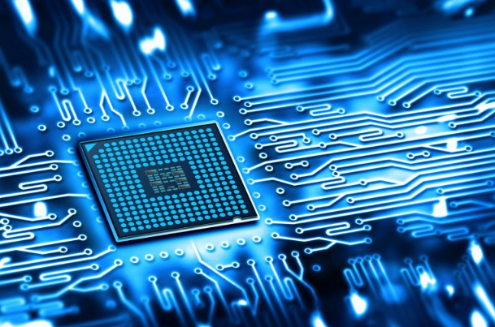

Courses Undertaken at IIT Bombay
I have completed the following courses as a part of my dual degree at IIT Bombay:
Data Science, Computer Science
Image Reference: Freepik
- CS 101: Computer Programming and Utilization
- DS 203: Programming for Data Science
- CS 419: Introduction to Machine Learning
- CS 601: Algorithms and Complexity
- CS 753: Automatic Speech Recognition
- CS 747: Foundations of Intelligent and Learning Agents
- IE 616: Decision Analysis and Game Theory
- IE 643: Deep Learning Theory and Practice
- EE 610: Image Processing
- EE 678: Wavelets
- EE 679: Speech Processing
- SC 646: Distributed Optimization in Machine Learning
Electrical Engineering

Image Reference: Freepik
Core Courses
- EE 114: Power Engineering - I
- EE 204: Analog Circuits
- EE 207: Electronic Devices
- EE 224: Digital Systems
- EE 229: Signal Processing
- EE 238: Power Engineering - II
- EE 301: Electromagnetic Waves
- EE 302: Control Systems
- EE 309: Microprocessors
- EE 325: Probability and Random Processes
- EE 338: Digital Signal Processing
- EE 341: Communication Systems
Electives
- EE 677: Foundations of VLSI CAD
- EE 709: Testing and Verification of VLSI Circuits
- EE 739: Processor Design
- EE 779: Advanced Topics in Signal Processing
Labs
- EE 214: Digital Systems Lab
- EE 230: Analog Circuits Lab
- EE 236: Electronic Devices Lab
- EE 240: Power Engineering Lab
- EE 324: Control Systems Lab
- EE 337: Microprocessors Lab
- EE 340: Communications Lab
- EE 344: Electronic Design Lab
Humanities
Image Reference: Freepik
- HS 101: Economics
- HS 200: Environmental Studies
- HS 303: Introduction to Psychology
- HS 440: Industrial Economics
- HS 635: Managerial Psychology
- EC 401: Behavioral Foundations in Decision Making (Audit Course)
Science and Math
- MA 105: Calculus
- MA 106: Linear Algebra
- MA 205: Complex Analysis
- MA 207: Differential Equations - II
- PH 107: Quantum Physics and Application
- PH 108: Basics of Electricity and Magnetism
- CH 105: Organic and Inorganic Chemistry
- CH 107: Physical Chemistry
- BB 101: Biology
- CH 117: Chemistry Lab
- PH 117: Physics Lab
Miscellaneous
- ME 119: Engineering Graphics
- ME 113: Mechanical Workshop
- EN 110: Energy Engineering Fundamentals
- NOCS01, NOCS02: National Sports Organization (NSO) - Chess
Online Courses
Udemy
- SQL - MySQL for Data Analytics and Business Intelligence
Instructor: 365 Careers | Course Duration: 12 hours
- Python for Data Science and Machine Learning Bootcamp
Instructor: Jose Portilla, Pierian Data Inc. | Course Duration: 25 hours
- Python for Computer Vision with OpenCV and Deep Learning
Instructor: Jose Portilla, Pierian Data Inc. | Course Duration: 14 hours